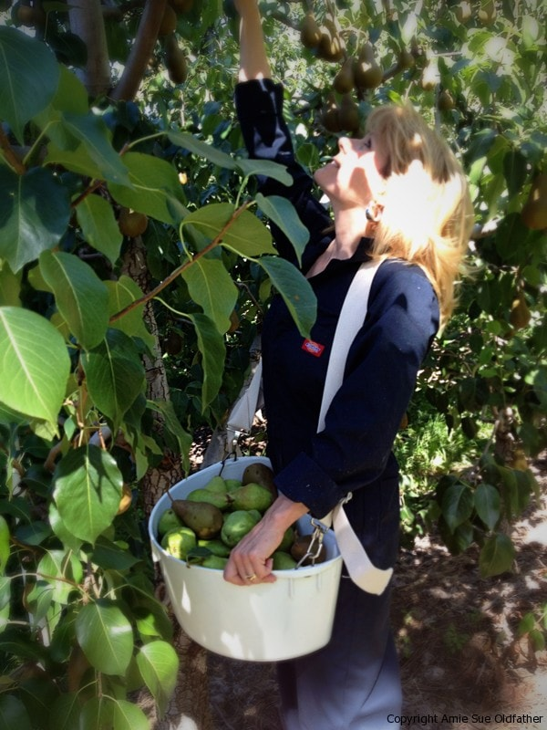
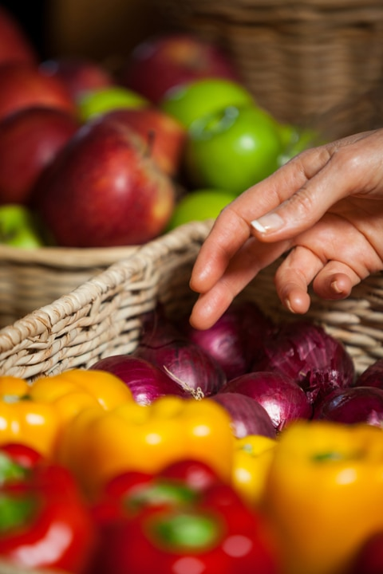
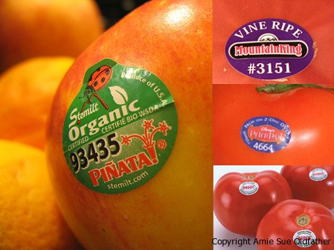

Eating Seasonally

“The seasons are what a symphony ought to be: four perfect movements in harmony with each other.” – Arthur Rubenstein
As of July 1st, 2013 I am officially a student of Integrative Nutrition. I have been interested in health since my late teens. I always thought I practiced a healthy lifestyle, and I did the best I could with the knowledge I had.
For instance, when I was fourteen years old and working in a grocery store, I started every morning with a large BRAN muffin that had just come out of the store bakery. I THOUGHT I was eating healthy, the pastry had bran in it, they dusted the top with a few oat pieces. Little did I know, I was basically eating a big, brown cupcake. Anyway, we all start with what we have and grow from there.
In one of the modules that I am studying, we are talking about eating seasonally. Years ago I would have interpreted eating seasonally as what to eat for Easter, Thanksgiving, and Christmas (haha). But what we are really talking about here is eating fresh produce when it is in season. To many, this may be a new concept. For those who eat foods that mainly come preprocessed everything is in season! You can eat Top Ramen and Mac ‘n’ Cheese year-round and the flavor never changes.
I will never forget the year we lived on Top Ramen. My dad is a wizard in the kitchen. He can open the fridge and cupboards and create something out of nothing. I remember every night asking dad what was for dinner and he would reply, “Stuff.” I knew this meant that he dumped a bunch of oddball ingredients in his magic pot and something wonderful would be ladled out on my plate.
Momma Had Enough!
So for 365 days, we ate some form of Top Roman. I don’t know how he did it but he created a new taste with it every passing day. I am thinking by day 333 it had started to grow old (lol) but on day 365 momma had ENOUGH! I can recall that day as if it were yesterday. Mom and I were sitting at the dinner table and dad waltzed over to the table carrying a large casserole dish. As he sat it down in center of the table, I peered in and instantly recognized the presence of Top Ramen. Mom grabbed the serving spoon with a sigh, scooped out some “Stuff” and went to plop it down on her plate. But it stuck to the spoon, she shook and shook the spoon but it refused to release itself.
A Loud Slushy Thud!
Finally, with a loud slushy thud, the “Stuff” landed in the center of her plate. I looked at the plate, then to the “Stuff,” and lastly to Mom. She had that look in her eyes and before I could give it any more thought she uttered the words quietly, “enough.” Then she said it a little louder, “enough!” Followed by a booming, “ENOUGH!” A glazed look washed over her, and she had the spoon in hand that still had some “Stuff” on it that refused to let go, she shook the spoon in the air, then brought it down to a slam on the table and said with great force, “I HAVE HAD ENOUGH!” Dad and I just sat silently. We all looked at one another and ate our “Stuff.” That night was never spoken about again and that was the last time dad made “Stuff.” haha
Like I was saying, we all do the best with what we have. But in today’s world with so much information at our fingertips, we no longer can afford to be naive. So today I wanted to give us all something to chew on (no pun intended) and to give some serious thought as to what it would be like to eat seasonally. What does it mean and why is it important? Let’s break this down a little bit.
Farmer’s Markets and purchasing produce locally.

Buying local, such as at Farmer’s Markets will pretty much assure you that you are eating what is in season. Unless of course, someone has to ship produce in from other areas, this is not sustainable. But usually and especially in small-town Farmer’s Markets, you are buying produce that is available fresh and local.
To learn more about what fresh foods are in season, click (here).
Support Your Neighbors
Buying local helps to support your fellow neighbor. Money stays within the community and strengthens the local economy. More money goes directly to the farmer, instead of to things like marketing and distribution.
When you buy local, you can check out the farms where things are grown and inquire about their farming techniques. It is important to purchase organic produce whenever you can. Not all farmers can advertise that they are growing organic produce.
It can be a huge expense to become “organically certified” so never be afraid to ask the farmers what they use on their soils and plants. Click here to educate yourself on how to make the best choices when it comes to buying organic or conventional produce.
Reduce Costs
Purchasing local cuts down on shipping costs and eliminates the environmental damage caused by shipping. As a result, we can help save a lot of fossil fuels and put less carbon dioxide into the air. In addition, produce must be picked while still unripe and then gassed to “ripen” it after transport. Or the food is highly processed in factories using preservatives, irradiation, and other means to keep it stable for transportation and sale.
Buying seasonal foods will expose you to a whole new set of produce items throughout the year, providing you with the opportunity to try something new and create different recipes. I read once that out of all the fruits and veggies that are grown, we only eat about 10% of them (in variety). Buying seasonally tastes better! Fruits and vegetables are harvested when they are ripe and thus full of flavor. For a complete listing of markets in all 50 states, please visit Local Harvest.
Characteristics of Community-Supported Agriculture
- Local farmers connect directly with consumers, which helps develop a regional food supply and strong local economy. CSA cuts out the ‘middleman,’ which lowers costs to both farmer and consumer.
- CSA farmers typically use organic or biodynamic farming methods, minimizing environmental pollution and encouraging land stewardship.
- Most CSA programs offer a variety of vegetables, fruits, and herbs in season. Some provide a full array of farm produce, including shares in eggs, meat, milk, and baked goods.
- CSA helps maintain a sense of community. Some are dedicated to serving particular community needs, such as helping the homeless, disabled, or youth and low-income groups.
Organic produce labeling stickers – you need to know this!
Labels with:
- Four digits beginning with 3 or 4 are conventionally grown non-GMO produce. These may have been sprayed with weed killers and chemical pesticides but are not genetically modified.
- Five digits beginning with 8 means that the produce is genetically modified. (boo! hiss!)
- Five digits beginning with 9 means it is organic! (refer to my post on the Dirty Dozen to see what foods to prioritize in buying organic.)
Remember this – “8 we hate………4 is poor………9 is Divine.”

Other Helpful Shopping Tools
- Need a shopping list to help you stay on track? Wonderful! Click (here).
- Learn how to select the best produce (here).
- Not sure how to go about purchasing frozen fruits and vegetables? click (here) to learn more.
I hope that you have found some of this information helpful. I would love to hear your thoughts on this subject matter. Please feel free to leave a comment.
Have a blessed day, Amie Sue
© AmieSue.com